The following theaters and musical institutions operate in Sumy:
- Sumy National Academic Theater of Drama and Musical Comedy named after M. S. Shchepkin (1 Teatralna Sq.);
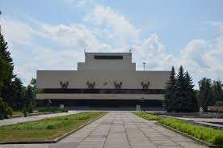 - Sumy Theater for Children and Youth (6 Pokrovska St.);
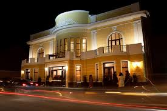 - Sumy Regional Philharmonic (63 Petropavlivska St.);
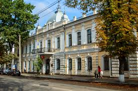
Museums
The most famous Sumy museums and exhibitions:
- Regional Museum of Local Lore (2 Gerasyma Kondratyeva St.) - the largest collection of historical and cultural objects of Sumy region
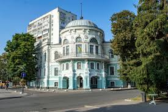 - Regional Art Museum named after N. Onatskyi (1 Pokrovska Sq.);
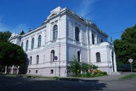 - Municipal Gallery (“SMuGa”, 27 Soborna St.);
- House-Museum of A. P. Chekhov (79 Chekhova St.);
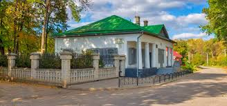 - Museum of the Development of Banking in Sumy Region and the History of Money (57 Petropavlivska St.);
Libraries
- Regional Universal Scientific Library (10, Heroyiv Sumshchyny str.);
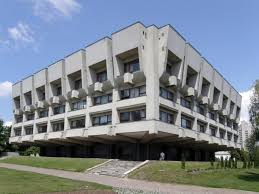 - Regional Library for Children (51 Petropavlivska St.);
- Library of the Congress Center of Sumy State University (9/1 Pokrovska St.)
Libraries operate at educational, club and museum institutions, in particular, the Library of the Ukrainian Academy of Banking of the NBU is a significant library institution.
Parks
Children's park “Skazka”
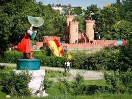Opened in 1985 to mark the 40th anniversary of the USSR's victory over Germany in the German-Soviet war. The park has several attractions, lakes, fortresses, and various sculptures of fairy-tale characters.
Ivan Kozhedub Park
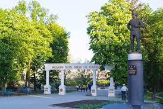The Central Park of Culture and Recreation in Sumy is named after Ivan Kozhedub. A monument to Ivan Kozhedub was erected at the entrance to the park to mark the 350th anniversary of the city in 2004. The park is located on the banks of the river Psyol and has amusement rides and various sculptures. The park is also home to the Yubileiny Stadium.
Architectural, historical, and cultural monuments
The main architectural monuments of Sumy are:
- Resurrection Church (XVIII century, 19 Independence Square);

- Transfiguration Cathedral (XVIII century, 31-a Soborna St.);
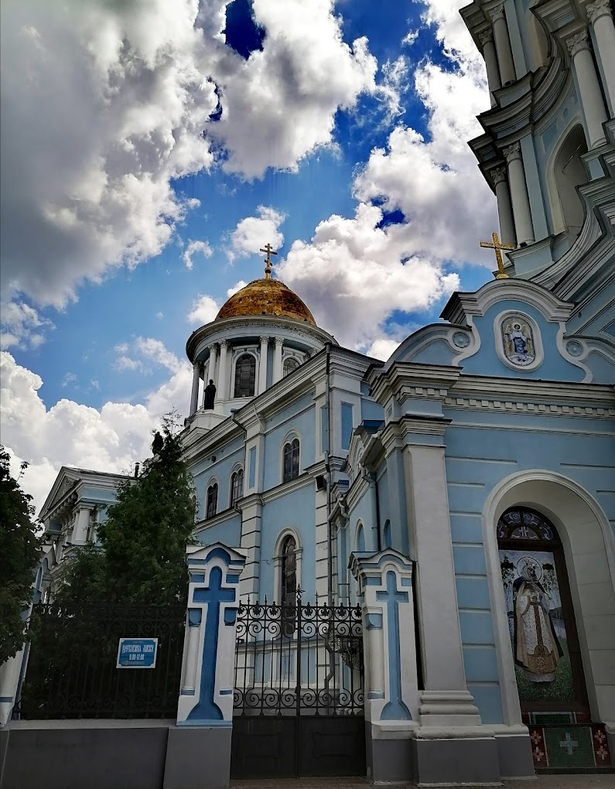 - Gazebo;
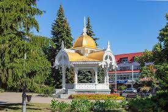 - Trinity Cathedral (XIX century, 34 Troitska St.);
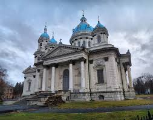 - St. Elijah's Church (XVIII century, 10/45 Ilyinska St.);
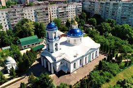 - Peter and Paul Church (XIX century, Sumy Art Brigade Street);
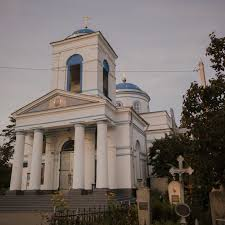 - St. Panteleimon's Church (early XX century, Romenska Street).
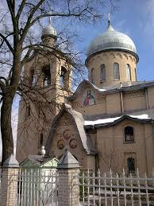